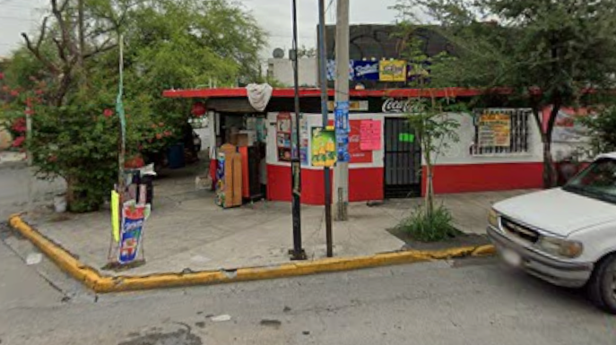
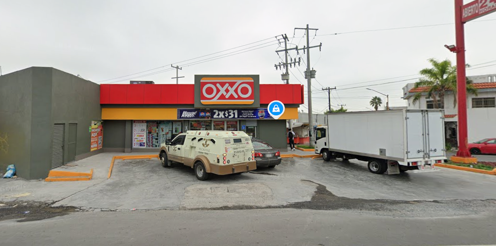
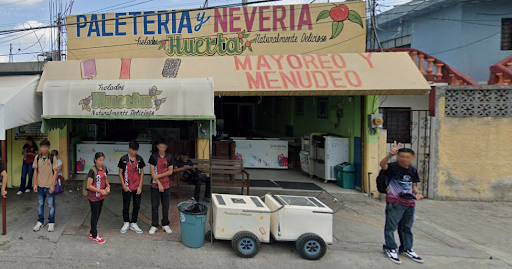
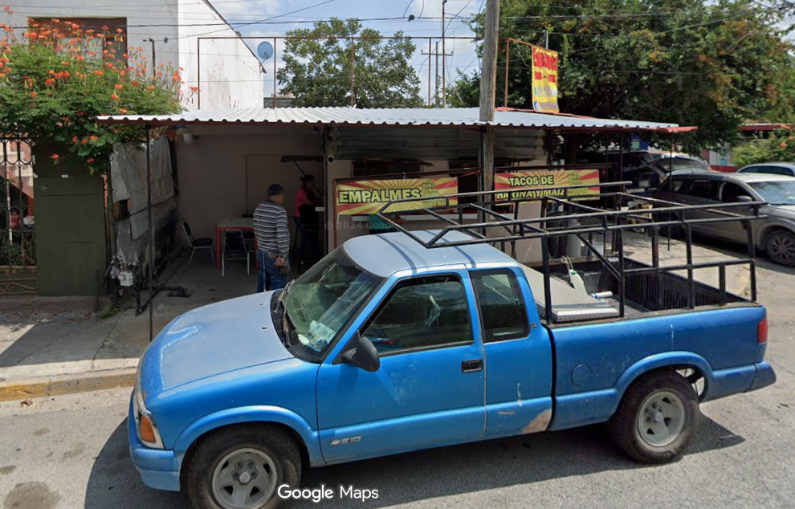
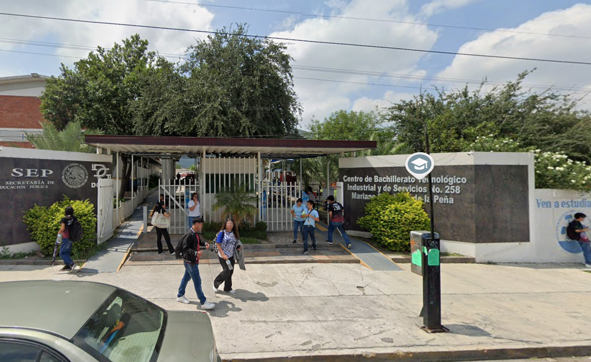

El propósito principal del PAEC (Programa Aula, Escuela y Comunidad) es integrar y transversalizar los conocimientos de las distintas asignaturas y áreas socioemocionales de la educación media superior para que los estudiantes analicen las problemáticas de su entorno y propongan alternativas de solución con sentido social, educativo y comunitario.
1.¿Qué haremos?
2.Identificación del problema
3.Propuesta de solución
4.Planeación de acciones y actividades
5.Búsqueda de fuentes de información y recursos
6.Exposición, socialización y evaluación

Tienda de Don Memo

Oxxo

Heladeria Huerta

Empalmes Juany

Cbtis 258